RASA World concept · 2026-11-12
The same four moments taken from each version at 1511 × 812. v1 stays as it was; v2 is your notes in RASA's own type; v3 is the same page wearing Not Human's type, colours and cards. v2 and v3 share one new glass engine, ported from Not Human.
Round 2 · your second set of notes
Shared by every version from v2 on:
· The logos now sit under the buttons, as in your reference (label, then a narrower row of smaller logos).
· The row's faded edges match the label's width.
· The video starts 22% bigger, so the black bands are gone.
· Every gallery photo opens on click.
The version before these notes is kept in versions/r1-2026-11-12/.
The logos are part of the centred block, as in your reference: label, then a smaller row as wide as the label, with fades at the edges. v5 adds a moving grain on the video. v6 turns the accent, the top tab and the header button iridescent.
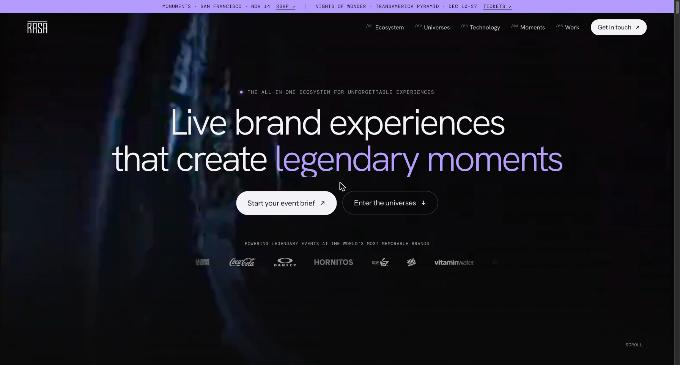
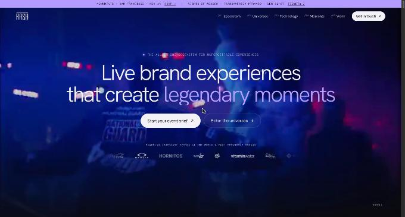
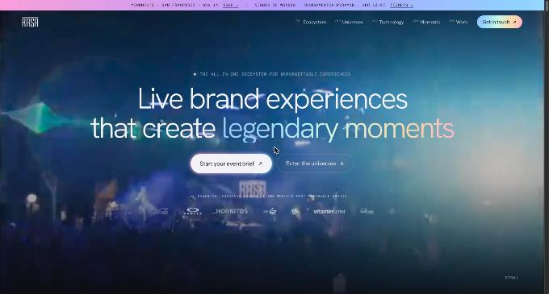
Each card now says what the arm is, what it covers (in chips) and one real figure from RASA's site, with a clear link. The drawing has moved to a small corner mark.
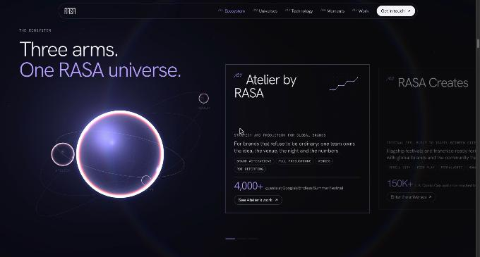
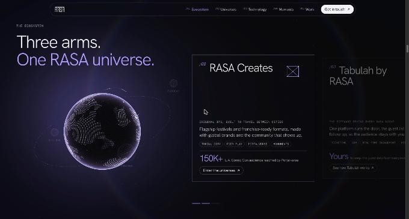
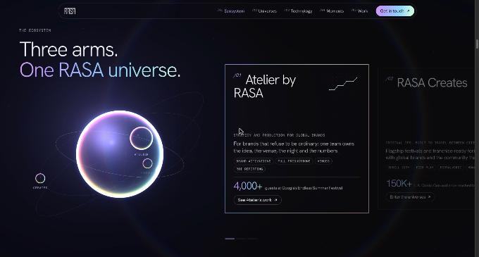
A planet made of 14,000 points: land is brighter, the limb turns violet, the atmosphere hugs the edge. RASA's cities are lit, and arcs of light run between them (LA ↔ Paris, SF ↔ Miami, and others). The portals become a ring of particles, and the close a spiral galaxy.
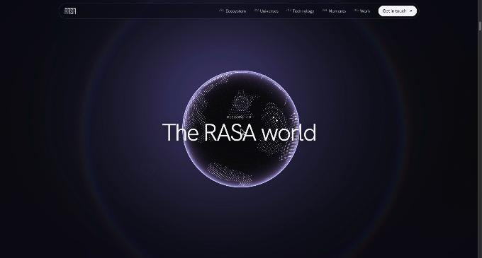
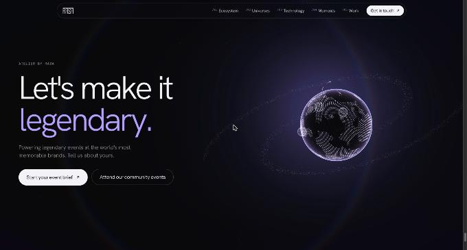
Tabulah is now its own interface instead of the phones photo: guest list, live check-ins, and a post-event report with Thrill City's published results (12,000 guests, 83% new audience, 47% wanting a season pass). The bars are illustrative, and the page says so. The gallery is a ring that turns as you scroll. Cards are about 260 px wide, far under the photos' 1000 px, so they stay sharp, and a click opens the photo big.
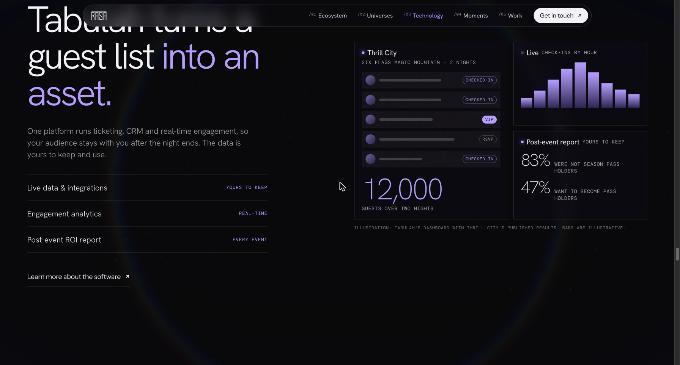
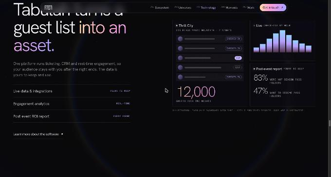
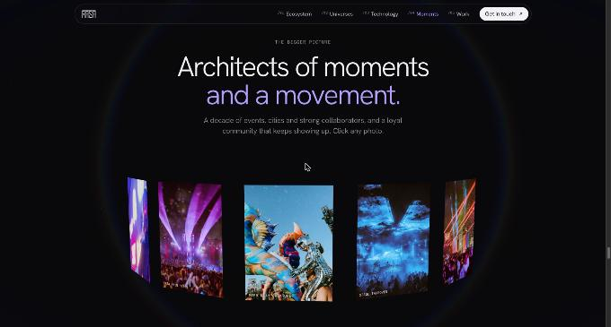
Round 1 · v1, v2, v3 as first compared
v1 sat on the left in five lines and crowded the logos. v2 and v3 centre the headline on two lines with a wide gap above the logos. v2 keeps RASA's Anton, with the accent words in violet. v3 uses Not Human's light grotesk, with the accent words as a dimmer white.
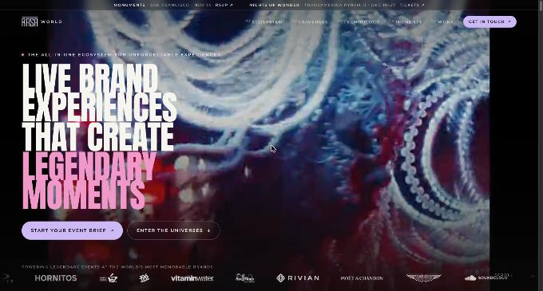
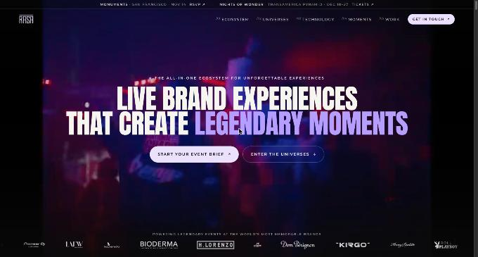
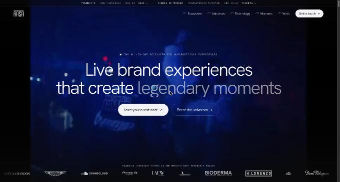
v1's globe was a solid, milky ball inside a large pink glow. v2 and v3 use Not Human's glass instead. The body is see-through and bends the room behind it. The rim splits its colour, warm inside and blue outside. A soft light sits on the upper rim. Around the globe the room goes darker, where v1 glowed.
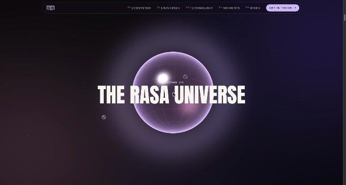
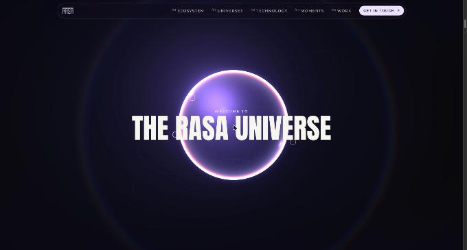
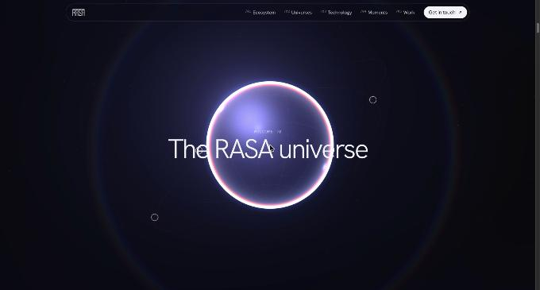
v1 swapped plain text next to the globe. In v2 and v3 the arms are cards, like Not Human's "How it works". The cards pass by while the world holds the left. Each one has a dot-grid drawing that draws itself in, and a glare that follows the pointer. The moon of the active arm grows and its orbit lights up.
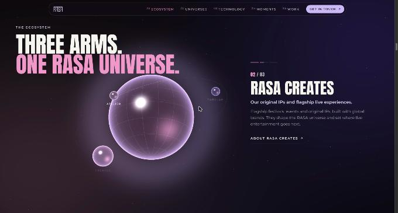
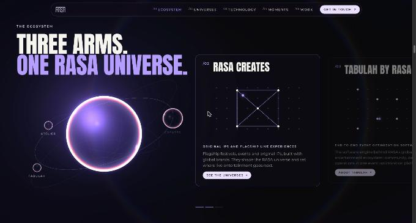
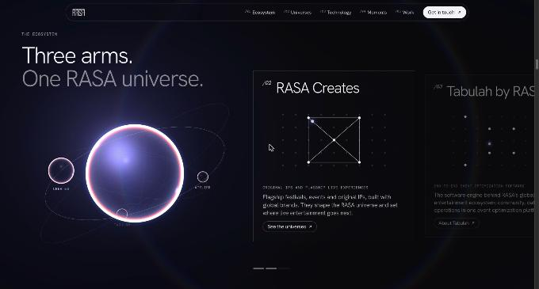
In every version the next universe opens through a portal. In v1 the rim was a faint grey line. In v2 and v3 it is the glass edge with its colour split, and the waiting seed is now clear glass: you see the photo through it.
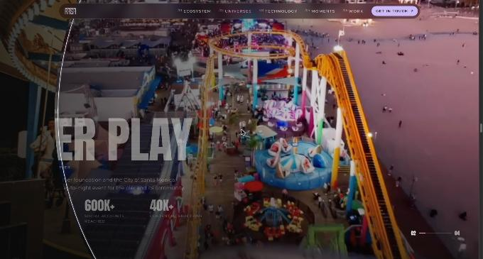
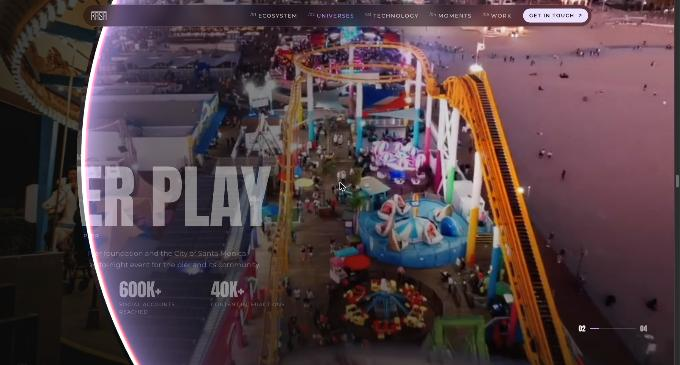
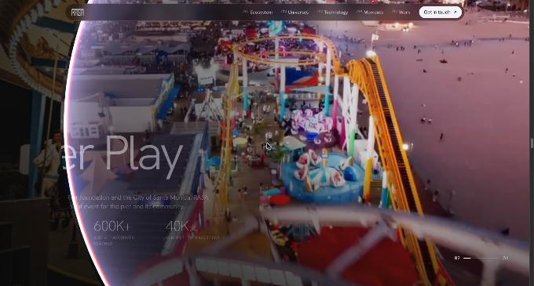
| Note | v2 | v3 |
|---|---|---|
| First block centred | Done | Done |
| Big text in two lines | Two lines on desktop and tablet; four on a phone, where two lines would be too small to read | Same |
| More space between the text and the logos | The text block stays at least 190px above the logo row | Same |
| "RASA", not "World" | The header shows the mark only | Same |
| Drop the glow; use Not Human's look | New engine (world2.js) with Not Human's room and glass | Same engine, Not Human's cooler light |
| Atelier and the others in cards | Frosted cards with dot-grid drawings | Not Human's square cards |
| Smaller RASA in the footer | About 110px wide (was 280px) | Same |
| Violet, not violet plus pink | One accent, #B49CFF; the pink is gone | No coloured accent: a second, dimmer white, like Not Human |
| Looks like Not Human (colours, shaders, cards, text) | Shaders and cards | All of it: Hanken Grotesk light, Instrument Sans, DM Mono, #09090B, white pills |